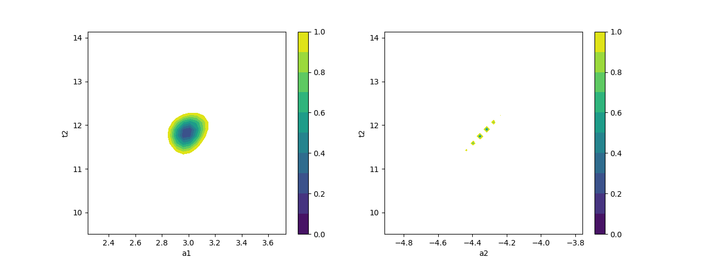
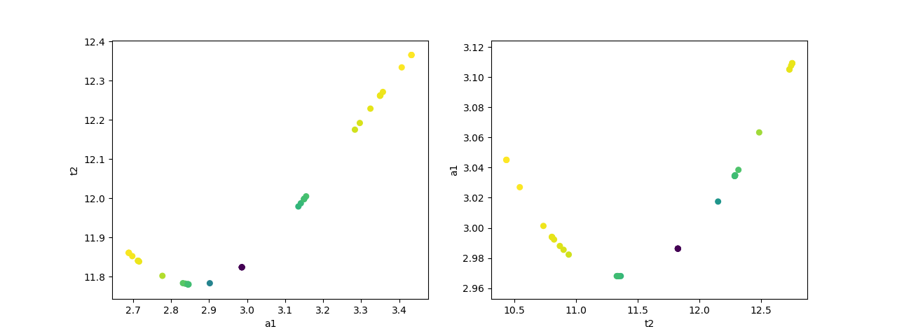

Note
Click here to download the full example code
doc_confidence_advanced.py¶

- 
- 
Out:
/Users/Newville/Codes/lmfit-py/examples/documentation/confidence_advanced.py:22: RuntimeWarning: overflow encountered in exp
return p['a1']*np.exp(-x/p['t1']) + p['a2']*np.exp(-(x-0.1)/p['t2']) - y
/Users/Newville/anaconda3/lib/python3.8/site-packages/lmfit-1.0.1+177.gc6cd665-py3.8.egg/lmfit/parameter.py:931: RuntimeWarning: overflow encountered in multiply
return self._getval() * other
/Users/Newville/anaconda3/lib/python3.8/site-packages/lmfit-1.0.1+177.gc6cd665-py3.8.egg/lmfit/minimizer.py:184: RuntimeWarning: overflow encountered in multiply
return (r*r).sum()
[[Variables]]
a1: 2.98622120 +/- 0.14867187 (4.98%) (init = 2.986237)
a2: -4.33526327 +/- 0.11527506 (2.66%) (init = -4.335256)
t1: 1.30994233 +/- 0.13121177 (10.02%) (init = 1.309932)
t2: 11.8240351 +/- 0.46316470 (3.92%) (init = 11.82408)
[[Correlations]] (unreported correlations are < 0.500)
C(a2, t2) = 0.987
C(a2, t1) = -0.925
C(t1, t2) = -0.881
C(a1, t1) = -0.599
95.45% 68.27% _BEST_ 68.27% 95.45%
a1: -0.27286 -0.14165 2.98622 +0.16353 +0.36343
a2: -0.30444 -0.13219 -4.33526 +0.10688 +0.19683
t1: -0.23392 -0.12494 1.30994 +0.14660 +0.32369
t2: -1.01943 -0.48820 11.82404 +0.46041 +0.90441
# <examples/doc_confidence_advanced.py>
import matplotlib.pyplot as plt
import numpy as np
import lmfit
x = np.linspace(1, 10, 250)
np.random.seed(0)
y = 3.0*np.exp(-x/2) - 5.0*np.exp(-(x-0.1)/10.) + 0.1*np.random.randn(x.size)
p = lmfit.Parameters()
p.add_many(('a1', 4.), ('a2', 4.), ('t1', 3.), ('t2', 3.))
def residual(p):
return p['a1']*np.exp(-x/p['t1']) + p['a2']*np.exp(-(x-0.1)/p['t2']) - y
# create Minimizer
mini = lmfit.Minimizer(residual, p, nan_policy='propagate')
# first solve with Nelder-Mead algorithm
out1 = mini.minimize(method='Nelder')
# then solve with Levenberg-Marquardt using the
# Nelder-Mead solution as a starting point
out2 = mini.minimize(method='leastsq', params=out1.params)
lmfit.report_fit(out2.params, min_correl=0.5)
ci, trace = lmfit.conf_interval(mini, out2, sigmas=[1, 2], trace=True)
lmfit.printfuncs.report_ci(ci)
# plot data and best fit
plt.figure()
plt.plot(x, y, 'b')
plt.plot(x, residual(out2.params) + y, 'r-')
# plot confidence intervals (a1 vs t2 and a2 vs t2)
fig, axes = plt.subplots(1, 2, figsize=(12.8, 4.8))
cx, cy, grid = lmfit.conf_interval2d(mini, out2, 'a1', 't2', 30, 30)
ctp = axes[0].contourf(cx, cy, grid, np.linspace(0, 1, 11))
fig.colorbar(ctp, ax=axes[0])
axes[0].set_xlabel('a1')
axes[0].set_ylabel('t2')
cx, cy, grid = lmfit.conf_interval2d(mini, out2, 'a2', 't2', 30, 30)
ctp = axes[1].contourf(cx, cy, grid, np.linspace(0, 1, 11))
fig.colorbar(ctp, ax=axes[1])
axes[1].set_xlabel('a2')
axes[1].set_ylabel('t2')
# plot dependence between two parameters
fig, axes = plt.subplots(1, 2, figsize=(12.8, 4.8))
cx1, cy1, prob = trace['a1']['a1'], trace['a1']['t2'], trace['a1']['prob']
cx2, cy2, prob2 = trace['t2']['t2'], trace['t2']['a1'], trace['t2']['prob']
axes[0].scatter(cx1, cy1, c=prob, s=30)
axes[0].set_xlabel('a1')
axes[0].set_ylabel('t2')
axes[1].scatter(cx2, cy2, c=prob2, s=30)
axes[1].set_xlabel('t2')
axes[1].set_ylabel('a1')
plt.show()
# <end examples/doc_confidence_advanced.py>
Total running time of the script: ( 0 minutes 8.113 seconds)